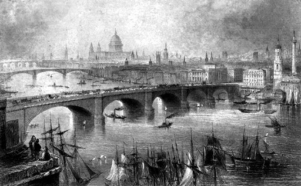
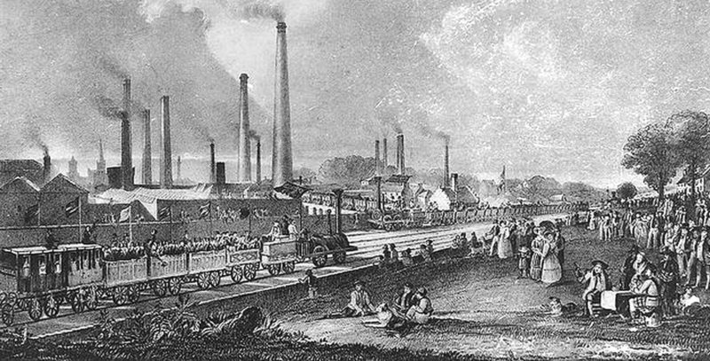
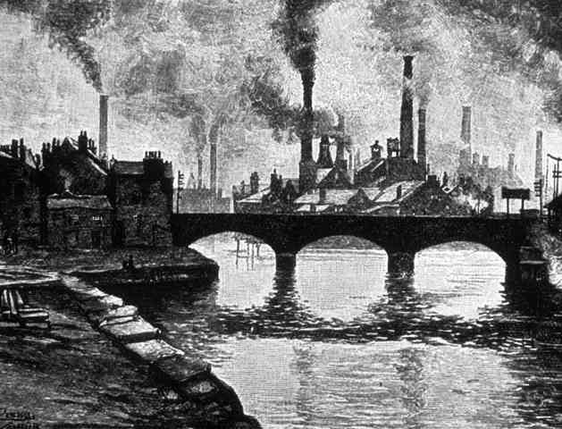

Pourquoi la critique du capitalisme ?
Comment en sommes-nous arrivé·es là ? Qui a allumé ce gigantesque feu qui fait fondre les glaces, carbonise les forêts, provoque canicules et sécheresses aux quatre coins du globe ? Aujourd'hui, les récits et les concepts qui tentent d'expliquer les origines du ravage écologique foisonnent et sèment une grande confusion. Dans les discours écologiques, on attribue souvent la faute à ce qu'on s'imagine être des idéologies ou des mentalités : consumérisme, productivisme, capitalisme, néolibéralisme, individualisme. Dans des théories plus raffinées, on tente de saisir un grand sujet de l'histoire qui serait le responsable de tous nos maux : la technique, la civilisation. On désigne des causes très récentes, comme la croissance économique, aussi bien que des causes immémoriales, par exemple des besoins qui seraient enracinés dans la « nature humaine ». Tous ces discours ont sans doute une part de vérité et une part d'erreur, mais sans ordre ni hiérarchie entre les causes, on ne parvient plus à répondre aux questions primordiales de notre présent : quel est le moteur du ravage écologique ? Comment produit-il ses effets dévastateurs ? Où agir le plus efficacement pour l'arrêter ?
Nous tenterons donc ici de réorganiser ces différents concepts et récits autour du concept qui nous semble leur conférer un maximum d'intelligibilité : le capitalisme. Cela peut paraître un choix surprenant, à l'époque où ce mot est rendu pratiquement inutilisable par le fait que personne ne s'accorde sur sa définition. De plus, la critique du capitalisme semble périmée par son association au XXe siècle avec un « communisme » peu reluisant écologiquement. Pourtant, le fait d'opposer toujours le capitalisme au communisme est assez absurde, car le communisme au pouvoir, au sens strict, n'a finalement été qu'une forme de capitalisme d’État (il n’y a qu’à voir ce que sont vite devenues l'URSS et la Chine). Le capitalisme, si on comprend bien de quoi il s'agit, traverse ces oppositions et domine tous ces pays. La Chine, qui est le plus gros émetteur de CO2 et dont le Parti dirigeant se prétend « communiste », est un pays tout aussi inséré dans l'économie capitaliste que les autres. Le concept de capitalisme ne décrit pas une idéologie, ni un régime politique qui serait l'opposé du communisme, mais un mode de production et de reproduction de la vie réelle, aujourd'hui étendu mondialement. Un mode de vie parmi d'autres, donc, qui n'est ni éternel, ni définitif, qui n'est qu'une façon temporaire et historiquement advenue d'habiter la Terre et d'organiser les sociétés. Le capitalisme n'est pas là depuis toujours : il est apparu à une période récente, précisément celle où le ravage écologique a pris une dimension planétaire et une intensité exponentielle, aux XIXe et XXe siècles. C'est pourquoi il nous intéresse ici1.
Capitalocène : une histoire du dérèglement climatique
Anthropocène ou capitalocène ?En écologie, la question du climat offre la démonstration la plus claire du rôle historique du capitalisme. D’où vient le fameux dérèglement climatique ? On fait souvent le lien entre CO2 et PIB, mais on revient plus rarement sur les causes historiques de ce couplage. Parmi les différents récits dont nous disposons, il y a celui de l'anthropocène, qui ne brille pas par sa finesse. « Anthropocène » est sans doute le mot le plus flou et le plus confus que l'on pouvait choisir pour décrire notre situation. Derrière ce mot, le responsable tout désigné est une abstraction : l’espèce humaine, l'humanité prise comme un tout, « l'homme » (anthropos en grec). Ou, pour être plus précis : son désir illimité de maîtrise technique, son besoin de sécurité, sa soif intarissable d’énergie. Ah, la nature humaine ! Le mal serait donc en nous depuis la nuit des temps, et nous serions, tou·tes autant que nous sommes, également responsables.
Pour qui a en tête quelques chiffres très accessibles sur le dérèglement climatique, l'analyse en termes d'anthropocène ne peut pas être prise au sérieux, car elle masque deux choses. Premièrement, au présent, elle masque les très nettes différences d'impact écologique en fonction des écarts de richesse, des pays ou des acteurs économiques concernés (entreprises, États, ménages). Il y a au sein de l'espèce humaine des sociétés très différentes, et au sein de ces sociétés, des hiérarchies, des gens qui décident, d'autres qui subissent, et il est impossible ou malhonnête de tout écraser dans un vague agrégat qui serait l’humanité entière. Par exemple, une centaine d'entreprises représentent à elles seules 71 % des émissions de gaz à effet de serre depuis 19882. Il s'agit des entreprises qui conduisent l'extraction des énergies fossiles et qui nourrissent d'immenses fortunes en les revendant à l'ensemble de la société pour qu'elles soient consommées. Ce sont précisément ces grandes entreprises, dont certaines sont aussi puissantes que des États, qui ont bataillé corps et âme au long des XIXe et XXe siècles pour imposer les énergies fossiles contre les énergies renouvelables, qui régnaient alors. Il paraît dès lors sensé, pour peu que l'on veuille agir vite et efficacement contre le ravage, de s'attaquer prioritairement à ces énormes robinets à carbone, plutôt qu'à chaque petit pot d'échappement.
Deuxièmement, les discours qui rendent l'humanité entière coupable du ravage nient complètement les responsabilités historiques. Ils ignorent même toute temporalité historique puisqu'ils ancrent le ravage dans des besoins humains éternels et anhistoriques. Comme si depuis la préhistoire nous étions condamné·es à en arriver au point où nous en sommes aujourd'hui, par le développement implacable de notre « nature ». Les scientifiques qui ont inventé cette notion d'anthropocène pensent que : « la maîtrise du feu par nos ancêtres a fourni au genre humain un outil […] qui nous place de manière décisive sur le long chemin menant à l’anthropocène »3. Or, jusqu'aux années 1980, ce n'est pas l'humanité, mais une toute petite partie de l'humanité - l'Angleterre et les États-Unis - qui ont été les principaux responsables des émissions de CO2, et de loin. Certains vont jusqu'à parler d'un anglocène, comme le fait l'historien Jean-Baptiste Fressoz4. Le ravage écologique ne découle pas de choix qui auraient été faits démocratiquement par l'espèce humaine (maîtriser le feu, adopter les énergies fossiles, développer l'économie, artificialiser les territoires), mais de rapports de forces socio-historiques. En écrivant l'histoire comme une ligne droite, on laisse de côté toutes les résistances, toutes les alternatives techniques qui se situent entre la maîtrise du feu par nos ancêtres et la consommation frénétique des combustibles fossiles aujourd'hui (charbon, pétrole, gaz). Le capitalisme apparaît faussement comme le dernier stade d'une marche nécessaire vers la catastrophe, dont les causes seraient beaucoup plus lointaines.
Pourtant, l'histoire montre que le capitalisme et le dérèglement climatique ont une origine commune en Angleterre. Elle montre aussi que ces événements, qui sont conflictuels, auraient pu être différents en fonction de l'issue des conflits.
Capitalisme fossile : le couplage entre capitalisme et dérèglement climatiqueLes historien·nes s’accordent à dire que l'utilisation massive des énergies fossiles date du formidable essor de la machine à vapeur dans l’industrie textile en Angleterre, au cours des années 1820-1830. En effet, la naissance du capitalisme industriel et le début du dérèglement climatique coïncident historiquement, comme le note Andreas Malm dans L'anthropocène contre l'histoire. Qui a fait le choix d’acheter et d’utiliser cette diabolique machine à vapeur à une si grande échelle, choix qui nous plongea dans les énergies fossiles pour au moins deux siècles ? Non pas le genre humain, mais un tout petit nombre d’Anglais : les capitaines de l'industrie textile. Et ceux-ci n'ont naturellement pas fait ce choix parce que cela profitait à l’espèce entière, ni parce que cela facilitait le travail ou coûtait moins cher. En réalité, les machines à vapeur coûtaient plus cher et produisaient moins d’énergie que la roue hydraulique, installable à prix modique partout où il y avait des cours d'eau. Si l'usage du charbon est devenu massif, c'est pour une double raison très prosaïque. D’une part, la machine à vapeur permettait à l’industrie de s’abstraire des contraintes géographiques, car les filatures hydrauliques étaient soumises à la présence de cours d’eau et à leur flux. Elle offrait d'autre part un pouvoir supérieur sur la main d’œuvre : en effet, les campagnes étaient traversées par une vague de luttes syndicales, et le manque de main d’œuvre en milieu rural et donc la plus grande facilité pour les grévistes de faire pression sur leurs employeurs, rendait les grèves ruineuses. Se rapprocher des centres-villes en revanche, comme la machine à vapeur le permettait, donnait accès à un réservoir de main d’œuvre intarissable. La réponse à notre question est donc simple : une quantité de travail plus élevée, des journées plus longues, moins de grèves, donc plus de création de valeur ! Le charbon, fabuleux animateur des machines, a été adopté parce qu’il était plus adéquat à la logique d’accumulation du capital.
Comment l'usage des énergies fossiles s'est-il répandu ensuite à toute « l'humanité » ? Les gentlemen capitalists ne sont pas restés tranquillement dans les villes anglaises, à utiliser modérément leur charbon anglais. L’Empire britannique a soumis le monde entier au capitalisme fossile par la concurrence et par la guerre. Deux facteurs ont favorisé l'émergence du capitalisme fossile en Angleterre : la disponibilité du charbon sur son propre sol, et sa situation d’empire colonial, qui lui donnait accès à des ressources cruciales. C’est donc tout naturellement qu’en Inde, pays dont le sol est riche en charbon et d'autres matières premières, les autochtones ont été massivement forcé·es à travailler dans les mines. Qu’à cela ne tienne, le progrès doit bien progresser, et le monde entier, par la grâce de la colonisation, est bientôt devenu un immense stock de ressources humaines et naturelles à conquérir pour les prospecteurs, les aventuriers, les scientifiques et les compagnies marchandes. L’Europe puis les États-Unis ont soumis le monde entier par la force nouvelle que leur conférait une industrie dopée aux énergies fossiles. L'adoption du pétrole suit la même logique : plus transportable car plus fluide, cette énergie a permis au capitalisme d’accélérer massivement ses flux, en supprimant à coup de tankers et d’oléoducs l'exigence de proximité entre lieu d’extraction et le lieu de consommation, qui subsistait encore avec le charbon5.
Voilà donc pourquoi on parle de plus en plus de capitalocène. La chaîne de décisions menant à l'usage massif des énergies fossiles découle des rapports capitalistes (et non des changements démographiques ou techniques), apparus à une période historique et dans un lieu précis. À aucun moment « l’espèce humaine » ne s’est réunie en concile pour voter démocratiquement l’usage massif des énergies fossiles, ou l'essor du mode de production capitaliste. Une poignée d’homo pyrophilis anglais, français, puis américains les ont imposés à tout le monde, par l’expropriation et la violence. Pour expliquer le dérèglement climatique, il est donc beaucoup plus pertinent de raisonner en termes de capitalisme qu'en termes de démographie. Si la planète se réchauffe, ce n'est pas parce que nous sommes « trop nombreux·ses », c'est parce que ce nombre est massivement inséré dans un système économique qui dévore les milieux vivants et rejette énormément de carbone. Depuis 1820, la croissance des émissions de CO2 a été 100 fois plus rapide que l'accroissement démographique de l’espèce humaine, ce qui montre que les deux facteurs sont beaucoup moins corrélés que le CO2 et l'accumulation de capital (reflétée par la croissance du PIB). De même, au début du XXIe siècle, 7 % des plus riches produisent 50 % des émissions de CO2 (contre 7 % d’émissions pour ce qui est des 45 % les plus pauvres)6.
Or ces choix énergétiques, faits dans notre passé et dans notre dos, nous engagent toujours lourdement aujourd’hui : les énergies fossiles représentent toujours 80 % du mix énergétique. Il se pourrait même que nous soyons bloqué·es par ce choix, du fait de « la tendance des décisions et des événements du passé à se renforcer d’eux-mêmes, réduisant ainsi, voire excluant, les possibilités de faire émerger des alternatives », comme le dit le GIEC7. Chaque fois qu’une autoroute, une centrale à charbon ou une raffinerie est construite, elle est censée durer de nombreuses décennies pour que l’investissement soit rentabilisé. Étant donné l'ampleur des investissements réalisés dans l'économie fossile (par exemple, les villes contemporaines ont été entièrement organisées pour la voiture), certains scientifiques parlent d’un verrouillage carbone (carbon lock-in)8. Ce verrouillage explique aussi pourquoi les énergies renouvelables ne font que s’additionner aux énergies fossiles, et non les remplacer. Le vent, l’eau et le soleil produisent une énergie intermittente et difficile à stocker. Or, il reste encore des réserves d’énergie fossile pour plusieurs dizaines d’années. Et l’on voudrait que le moment où le capitalisme se mondialise, déracine toutes les populations rurales, intensifie ses flux et s’abstrait de toute contrainte naturelle ou humaine, paraisse comme le moment propice à l’adoption des énergies renouvelables ?
Pourquoi le capitalisme est anti-écologique
Dépossession et croissance infiniePour comprendre les origines du dérèglement climatique, et plus généralement celles du ravage écologique, il faut s'intéresser à une période historique précise, celle de la naissance d'un certain mode de production et de reproduction de la vie sociale apparu récemment : le capitalisme. Que veut-on dire par capitalisme, et pourquoi en faire le moteur du ravage écologique ?
On ne sait plus bien aujourd'hui si le capitalisme est un système économique, ou une idéologie, s’il est un moment dépassable de l'histoire économique, ou un trait essentiel de la nature humaine ; on se demande s’il n’est pas un moindre mal, si le problème n'est pas ailleurs, ou avant, ou après. Mais en supposant que la critique du capitalisme n'est qu'une description partielle ou partiale de la réalité, on rate le fait majeur que c’est précisément le capitalisme qui, historiquement, tend à absorber toute réalité. Sa logique est une logique d'extension du domaine de ce qui est marchandisable : de façon absolument anti-écologique, le capitalisme tend à transformer le monde entier en marchandise.
On peut caractériser le capitalisme par deux traits essentiels, en suivant Marx dans le premier livre du Capital9.
1. D’un côté, le capitalisme est un rapport social : un petit nombre de propriétaires s'accaparent les moyens de production et de reproduction de la vie (d'abord les terres et outils agricoles, puis l'ensemble de ces moyens), tandis que la grande majorité paysanne qui compose alors la population en est expropriée. Elle est dès lors contrainte d’avoir recours au salariat dans les campagnes mais surtout dans les villes pour avoir accès à de la nourriture. C'est par cette phase agraire que commence tout passage au capitalisme : en Angleterre entre le XVIe et le XVIIIe siècle, c'est le fameux mouvement des enclosures, qui transforme une agriculture traditionnelle dans le cadre d'un système de coopération et de communauté d'administration des terres en une agriculture intensive dans le cadre d'un système de propriété privée des terres. Le mode de production capitaliste implique donc de priver une population de ses moyens de subsistance. Il s'agissait non seulement de la faire travailler au profit d'un propriétaire, mais aussi de lui vendre ce qu'elle produisait auparavant par elle-même. L'histoire des débuts du capitalisme est cette longue suite de dépossessions, souvent brutales, parfois indirectes (pressions du marché, impôts) qui se matérialisent d'abord par des exodes ruraux massifs en Europe, et des conquêtes coloniales dans le reste du monde. La grande industrie au XIXe siècle puis l'économie de services au XXe siècle finiront de nous arracher nos savoir-faire, de nous aliéner à des machines et à des tâches absurdes, de parcelliser et de spécialiser le travail à l'infini. Pour l'écologiste, c'est une histoire terrible, car ces dépossessions successives nous rendent non seulement dépendant·es d'une économie qui ravage la planète pour notre vie ou notre survie, mais elles nous rendent aussi incapables de résoudre le problème, puisque nous avons perdu tous nos savoir-faire, nos biens communs, nos solidarités. Tout est à reconstruire.
2. De l’autre côté, le capitalisme est un cycle infini de valorisation de la valeur, où l'argent est utilisé comme capital, c'est-à-dire non pour acheter ou vendre quelque chose, mais pour produire plus d'argent. Cette opération, qui correspond à n'importe quel investissement de capital aujourd'hui, est assez magique quand on y réfléchit : on utilise de l'argent pour multiplier cet argent et en obtenir plus. Cette valeur ajoutée vient de l'exploitation de la force de travail, qui transforme des ressources naturelles extraites gratuitement des milieux vivants. Marx note schématiquement ce cycle sous la forme argent (capital) → marchandise → plus d'argent (A → M → A’). Notons que, dans ce cycle qui caractérise le capitalisme, les vivants et leurs milieux n'interviennent que sous forme de marchandises, ce qui n'incite guère à les traiter avec soin et respect. De plus, les marchandises produites dans un cycle capitaliste ne le sont pas en raison des besoins des acheteurs (valeur d'usage), mais uniquement pour être vendues (valeur d’échange). C'est pourquoi il faut, pour écouler la quantité toujours plus grande de marchandises, produire artificiellement des besoins, augmenter sans cesse la consommation. La caractéristique cruciale du capitalisme est que l’économie y devient une sphère hégémonique et indépendante des autres sphères de la société (religion, politique, morale, etc.), qui impose sa contrainte cyclique d'accumulation d'argent à toutes les activités et à tous les aspects de la vie.
Il faut bien voir que la logique du capital est une contrainte qui s’impose à tout le monde, y compris aux capitalistes eux-mêmes. Le caractère compétitif de l'économie capitaliste soumet chaque acteur capitaliste à cette injonction : croître (en augmentant ses parts de marché, en absorbant ses concurrents) ou disparaître (en étant absorbé par eux). Au niveau macroéconomique, si le cycle d’accumulation croissante s’arrête, si les investissements cessent d'être rentabilisés, les faillites s’enchaînent : c’est une crise. Le capitalisme dit donc : la croissance ou la crise ! Pour les écologistes, il est plus pertinent de faire une critique bien informée du capitalisme, plutôt qu'une critique de la croissance, du productivisme ou du consumérisme, car ces trois phénomènes ne sont que de simples effets de la domination du capitalisme sur nos vies.
Du fait du cycle d'accumulation, les acteurs du capitalisme sont soumis à une pression d'extension et de conquête de nouveaux champs de valorisation. En effet, l’économie capitaliste, après s'être étendue spatialement sur tout le globe par la colonisation, les politiques de développement, la mondialisation, s’est étendue, socialement, à tous les temps et aspects de l’existence : la subsistance est devenue la consommation, le jeu un temps de loisir, l'entraide un service. Puisqu'il ne suffisait pas de conquérir tout l'espace réel, l'économie capitaliste a aussi profité de l'excroissance informatique de cette réalité (internet), qui ouvre de nouveaux champs de valorisation (spéculation financière, écrans, objets connectés, big data). Aujourd’hui, le capitalisme peine à trouver de nouveaux champs de valorisation à conquérir, car il est déjà presque partout. Il ne lui reste plus que la spéculation infinie sur de la création de valeur future : c’est le crédit et la dette. 99% des échanges mondiaux concernent du capital fictif, pour 1% de marchandises réelles ; et la dette mondiale équivaut à 23 fois le PIB mondial, ce qui excède infiniment toute possibilité de remboursement10. Voilà pourquoi les crises sont cycliques et inéluctables : toute cette valeur à rembourser ne sera jamais créée, et tant qu'on s'acharne à essayer, on consomme intégralement les milieux vivants.
Les milieux vivants deviennent nature-ressource ou nature-déchargeQuel rôle occupent les milieux définis comme naturels dans le cycle de valorisation capitaliste ? La nature intervient paradoxalement à la fois comme matière première et comme décharge.
D’une part, le capitalisme ayant besoin de toujours plus de travail et de machines, il a aussi besoin de toujours plus de matières premières : la nature est donc utilisée comme un stock de ressources, qu'il est nécessaire de protéger et de conserver. Pour augmenter la productivité du travail, le capitalisme a en effet tendance à remplacer de plus en plus les travailleur·ses par des machines (de la manufacture au travail à la chaîne ; du chauffeur à la voiture qui se conduit toute seule ; du traducteur à Google Translate). La part de travail est donc de plus en plus réduite aux rôles de surveillant et d’exécutant de l’activité autonome des machines (chez Uber, certain·es obéissent à l’algorithme, d’autres l’entretiennent). Cette transformation a un impact écologique : plus il y a de machines et plus il faut les rentabiliser en leur apportant du travail, de l’énergie et des matières premières. C'est pour cela que Marx décrit le capitalisme comme une créature terrible « qui exige en sacrifice toutes les richesses 11.
D’autre part, et de façon contradictoire, la nature est aussi la gigantesque décharge où s’entreposent les déchets du capitalisme – ses externalités, comme disent amoureusement les économistes, comme si la « nature » devait être notre extérieur, notre environnement, et non notre milieu de vie. Les citadin·es jouxtant une usine toxique, les peuples expulsés pour construire des pipelines dans les parcs naturels, les touristes vagabondant dans des espaces artificiels et standardisés, tout ce beau monde a le loisir d’apprécier ce que deviennent les milieux vivants sous l’effet du capitalisme : à certains endroits, un enclos protégé de ressources à exploiter ; à d’autres, une grande poubelle à ciel ouvert.
Insuffisance du concept de capitalisme
Pourquoi le capitalisme pose-t-il problème écologiquement ? Car les rapports sociaux qu'il impose nous coincent dans des modes de vie à la fois invivables et anti-écologiques. En nous rendant absolument dépendant·es de l'économie pour nous nourrir, nous loger, nous habiller, communiquer, jouer, il nous retire toute prise sur le monde, toute possibilité de le configurer et de l’habiter comme bon nous semble. « Chacun trouve aujourd’hui en naissant l’économie capitaliste établie comme un immense cosmos, un habitacle dans lequel il doit vivre et auquel il ne peut rien changer — du moins en tant qu’individu »12.
On pourrait nous objecter qu’un tel rapport au monde n'est pas propre au capitalisme, que c’est la technique qui est fautive, voire la civilisation. Évidemment, l'analyse du ravage en termes de technique ou de civilisation fournit des éléments que la simple critique du capitalisme ne fournit pas, et que nous n'avons pas vocation à développer ici. Si nous privilégions la critique du capitalisme à celle de la civilisation, c'est parce que celle-ci a le défaut de brouiller les pistes d'action envisageables, en s'attaquant sous le nom de « civilisation » à des multitudes de sociétés passées et actuelles, dont les modes de production et de coexistence avec leurs milieux n'ont pourtant rien à voir entre eux. La nouveauté du capitalisme par rapport au début de la civilisation (qu'on marque souvent par la révolution néolithique), c'est que l’économie se met à exister en tant qu'activité hégémonique, séparée des autres activités humaines, alors qu'auparavant, elle n’avait pas tous les moyens de ses ambitions de domination. C'est la place des milieux vivants (ressource et poubelle) dans l'économie capitaliste qui donne une ampleur énorme et irréversible à leur destruction, et pas des abstractions comme « la civilisation » ou même « la technique ». De même, si nous privilégions la critique du capitalisme à celle de la technique, c'est parce qu'il y a de la technique depuis qu'il y a des humains, et que la situation présente n'a rien à voir avec la maîtrise du feu par nos ancêtres. Historiquement et géographiquement, il existe diverses formes de rapports techniques aux milieux vivants qui ne se valent pas tous. Aujourd'hui, il nous semble que ce qui pose problème du point de vue technique, c'est l'autonomie d'un immense macrosystème technologique, mis en place dans le cadre du capitalisme pour s'abstraire des contraintes propres à chaque milieu.
Il serait pourtant trop facile de faire du capitalisme la source de tous les maux, voire de toutes les oppressions ; certaines sont bien antérieures (même si elles prennent une forme spécifique à son contact) et supprimer le capitalisme ne les éliminera pas. Une écologie sans transition ne peut se réaliser sans détruire les structures de domination - économiques, sociales et politiques - qui engendrent le ravage et vivent de lui. L'essentiel est donc de multiplier les points de vue pertinents sur le ravage, d'exposer les modes de résistance qui en découlent. Nous voudrions donc ajouter deux grilles d'analyse supplémentaires, qui nous semblent cruciales à l'heure où beaucoup d'écologistes se déclarent aussi féministes et anti-coloniaux. Nous avons déjà mentionné tout ce que doit l’extension du capitalisme à la colonisation ; mais le ravage colonial dépasse sa stricte compréhension capitalistique et doit être abordé pour lui-même. Tout aussi essentiel est le travail gratuit des femmes et l'appropriation de leur corps pour la reproduction du mode de vie capitaliste. Mais là encore, le sujet demande à être abordé spécifiquement.
Dans cette seconde partie, nous avons choisi de séparer artificiellement trois structures de domination sans prétendre qu'elles sont les seules. Cela ne permet pas d'englober parfaitement ces réalités qui sont profondément imbriquées les unes dans les autres, mais nous croyons fermement que les outils théoriques que cette séparation permet de développer ne peuvent que rendre nos luttes plus puissantes.
---1. Merci à J. Vioulac (Marx, Approches de la criticité), A. Campagne (Le Capitalocène) et à J-B. Fressoz et C. Bonneuil (L’événement anthropocène) pour leurs analyses qui nourrissent l’ensemble des réflexions qui suivent.
2. Carbon Disclosure Projet, « The carbon major database », 2017.
3. W. Steffen, P. Crutzen et J. McNeill, « The Anthropocene : Are Humans Now Overwhelming the Great Forces of Nature? », AMBIO : A Journal of the Human Environment, 2007.
4. C. Bonneuil & J-B. Fressoz, op. cit.
5. T. Mitchell, Carbon Democracy, La Découverte, 2011.
6. A. Malm, Fossil Capital, Verso books, 2016.
7. O. Edenhofer, R. Pichs-Madruga, Y. Sokona et al., Climate Change 2014 : Mitigation of Climate Change. Contribution of Working Group III to the Fifth Assessment Report of the Intergovernmental Panel on Climate Change, 2014.
8. P. Erickson, S. Kartha, M. Lazarus et K. Tempest, « Assessing Carbon Lock-In », Environmental Research Letters, 2015.
9. Si le vieux barbu peut être qualifié de « penseur de l’écologie », c’est peut-être avant tout parce qu’il a mis en avant l’inscription des collectifs humains dans le tissu de la vie, la terre, la nature mise au travail. Et qu’il a même pointé quelques contradictions intenables du capitalisme sur ce terrain. Mais le marxisme (et Marx lui-même) a aussi contribué à répandre une idée du bonheur, du salut, de la révolution qui ont fait oublier le monde naturel et ses exigences, et qui ont préparé le terrain à l’essor de la grande industrie. C’est pourquoi nous prenons ici quelques libertés par rapport au marxisme orthodoxe.
10. E. Lohoff et N. Trenkle, La Grande dévalorisation, Post éditions, 2014.
11. K. Marx, Introduction de 1857, in Manuscrits de 1857-1858, dits « Grundrisse », Les Éditions sociales, 2018.
12. Max Weber, L’éthique protestante et l’esprit du capitalisme, Champs, 2008.